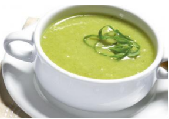

Couve Manteiga
Béneficios
Se consumida
com frequência, pode promover a
redução e prevenção de doenças
crônicas, podendo prevenir também
doenças cardiovasculares e até
mesmo o câncer. Também auxilia na
função intestinal, devido a presença
de celulose em sua composição.
Rico em vitaminas A, do
complexo B, fibras e minerais, e
também possui muito ferro e vitamina
C na sua composição.
Receita Caldo de couve manteiga
Tempo de preparo: 25 minutos / Rendimento: 4 porções
Ingredientes
- 3 dentes de alhos;
- 1 cebolas pequena;
- 700 ml de água;
- ½ colher de azeite;
- Sal e temperos a gosto;
Modo de Preparo
- Doure o alho e a cebola no azeite;
- Acrescente a couve picada e refoge, depois acrescente a água e espere ferver;
- Tempere a gosto e deixe ferver por mais 5 minutos;
- Sirva-se.